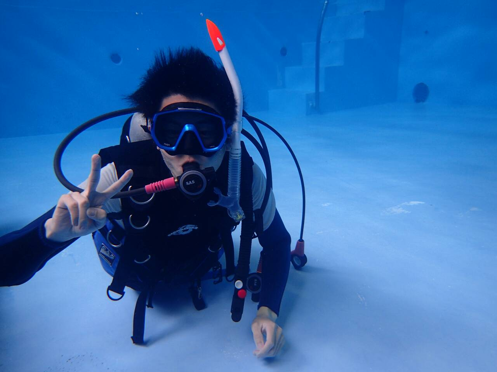

Profile
大庭 武志 -Oba Takeshi-
1996年 7月23日 島根県出身
島根大学 総合理工学部 卒業
静岡県立大学 経営情報イノベーション研究科 修了
資格
応用情報技術者
TOEIC 公開 665 / IP 750
英検 2級

ポートフォリオ
1996年 7月23日 島根県出身
島根大学 総合理工学部 卒業
静岡県立大学 経営情報イノベーション研究科 修了
応用情報技術者
TOEIC 公開 665 / IP 750
英検 2級
使用言語・フレームワーク: Ruby on rails
制作期間: ６ヶ月
制作人数: グループ(6人)
実装担当: デプロイ, DB設計, バックエンド部分, Gem調査
授業で企業をメンターに, 発案から設計・実装までを通しで作成.
キュレーションサイト, Twitterのトレンドから, ユーザーが記事を作成・公開できる.
自分は主にバックエンド担当で, Twitterデータの収集・DBテーブル設計・各種Controllerなどを作成.
使用言語・フレームワーク: iOSアプリ(swift)
制作期間: 1ヶ月
制作人数: 1人
実装担当: すべて
ソート可視化の動画に憧れてSprite Kitを用いて作成.
各種ソート、クラスタリングを視覚的に行うだけのアプリ。見てて楽しい。
使用言語・フレームワーク: Python, matplotlib
制作期間: 1ヶ月
制作人数: 1人
実装担当: すべて
実は宇宙が好きで, プログラミングで何らかのシミュレータを作成したかったため作成.
太陽系の惑星軌道のシミュレータ. 軌道要素を入力すれば理論上太陽系内の天体に対応可能
使用言語・フレームワーク: iOSアプリ(swift)
制作期間: 1ヶ月
制作人数: 1人
実装担当: すべて
アルバイトのチュートリアルで作成。記事の閲覧・お気に入りはもちろん、Rssのリンクを追加・削除もできる。